对于以下优化问题，我们需要找到最优的参数$\theta ^ \ast$，使得损失函数最小：
$$ \theta ^ \ast = arg \min_{\theta} L(\theta) $$
使用梯度下降的方法进行优化。
梯度是损失函数的等高线的法线方向，每次更新参数时，往梯度方向的反方向走。
$$ \theta^{t+1} = \theta^t - \eta * \nabla L(\theta^t)$$
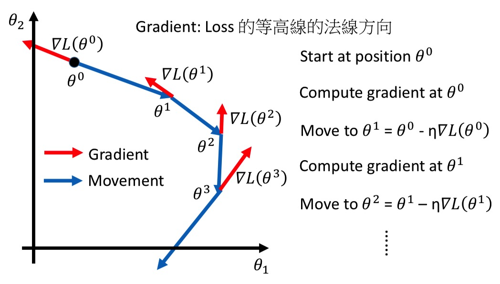
梯度下降的几个小技巧
调整learning rate
将Loss的变化趋势可视化出来。
- 如果learning rate比较小，那么Loss降低得很慢；
- 如果learning rate比较大，那么Loss会出现在极小值附近震荡的现象；
- 如果learning rate太大，那么Loss会剧烈变化，飞出去了；
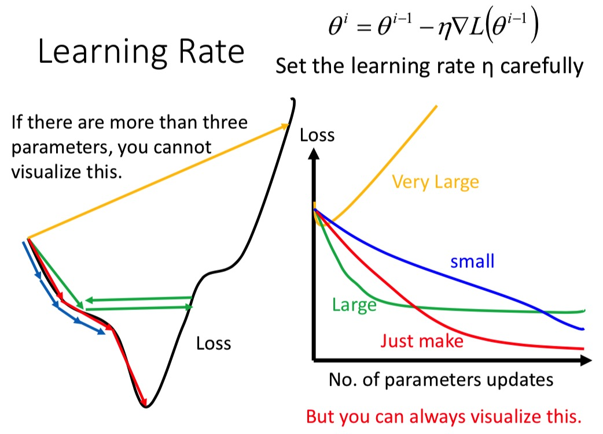
自动调整learning rate
- 流行且简单的方法是，逐渐减小learning rate
- 刚开始的时候，离最优解比较远，采用比较大的learning rate
- 随着迭代次数增加，离最优解越来越紧，我们慢慢减小learning rate
- 例如：$ \eta^t = \eta / {\sqrt{t+1}}$
- 每个不同的参数，采用不同的learning rate
Adagrad
每个参数的learning rate都除上过去所有微分值的均方根（root mean square of its previous derivatives）
普通的Gradient Descent：（对于每个参数）
$$ w^{t+1} = w^t - \eta^t g^t $$
Adagrad:（对于每个参数）
$$ w^{t+1} = w^t - \frac {\eta^t} {\delta^t} g^t $$
其中:
- $ \eta^t = \frac \eta {\sqrt{t+1}} $
- $ g^t = \frac {\partial L(\theta ^ t)} {\partial w} $
- ${\delta^t}$是过去所有微分值的均方根。
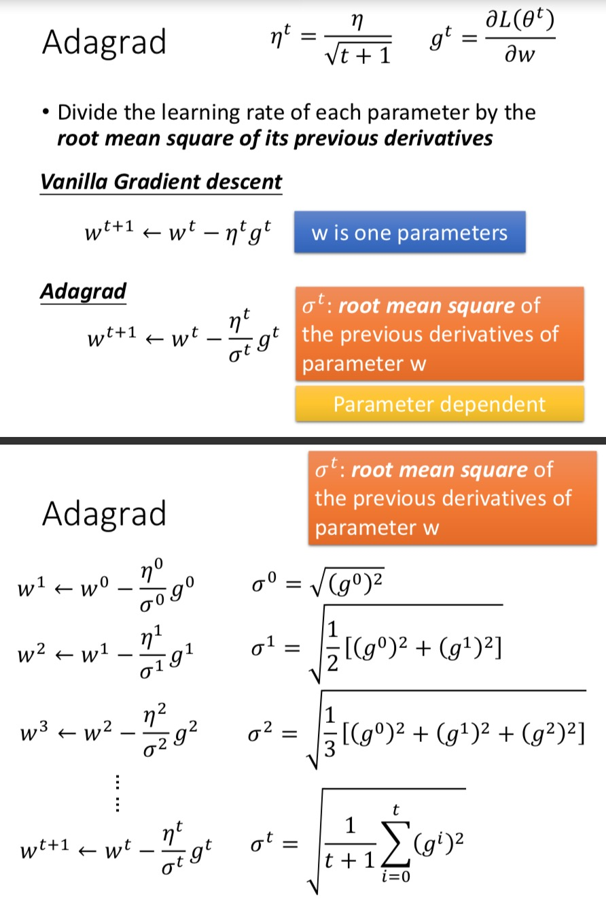
消掉$ {\sqrt{t+1}} $之后：
$$ w^{t+1} = w^t - \frac \eta {\sqrt{\sum_{i=0}^t (g^i)^2}} g^t $$
再比较一下普通的梯度下降与Adagrad：
普通的Gradient Descent（对于每个参数）：
$$ w^{t+1} = w^t - \eta^t g^t
= w^t - \eta \frac {g^t} {\sqrt{t+1}}
$$
learning rate随着t的增大而减小，$g$越大时，参数变化得越大。
Adagrad（对于每个参数）：
$$
w^{t+1} = w^t - \frac \eta {\sqrt{\sum_{i=0}^t (g^i)^2}} g^t
= w^t - \eta \frac {g^t} {\sqrt{\sum_{i=0}^t (g^i)^2}}
$$
learning rate与过去所有的微分有关，$g$越大时，如果过去所有的$g$也很大，那么参数变化得不大；如果过去所有的$g$很小，那么参数变化得就很大。
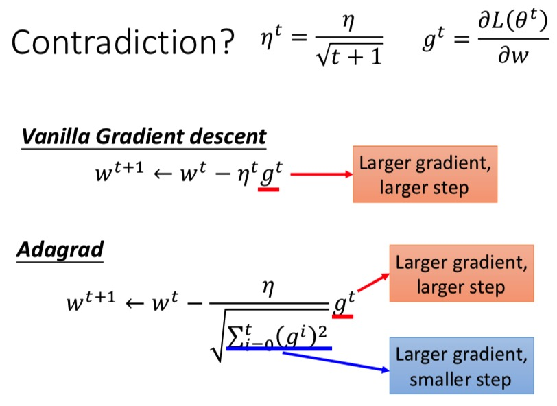
Adagrad每次更新参数时，不仅考虑了当前的梯度$g^t$，而且还考虑了过去所有的$g$，即$\sqrt{\sum_{i=0}^t (g^i)^2}$。
这个$\sqrt{\sum_{i=0}^t (g^i)^2}$ 能造成反差的效果。
如下图：
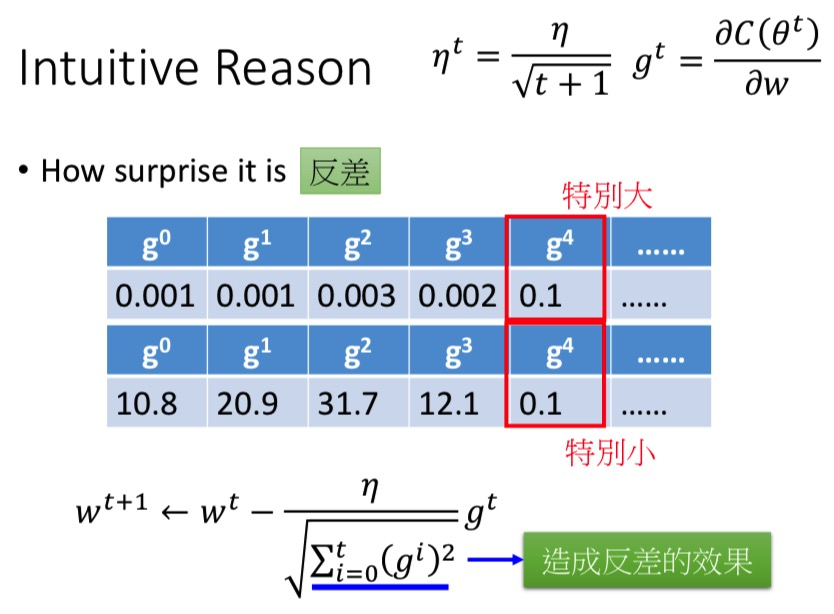
TODO：添加解释
用过去所有微分值的均方根来替代二次微分。
随机梯度下降(Stochastic)
- 普通的梯度下降（所有的样本）：
- 损失函数：$ L = \sum_{i=1}^n \left( \hat y^i - w*x \right)^2$
- 参数更新：$ \theta^{t+1} = \theta^t - \eta \nabla L(\theta^t) $
- 看完了所有的样本，才更新参数。
- 随机梯度下降（选择一个样本）：
- 损失函数：$ L^i = \left( \hat y^i - w*x \right)^2$
- 参数更新：$ \theta^{t+1} = \theta^t - \eta \nabla L^i(\theta^t) $
- 没看完一个样本，都更新一次参数。虽然每次用一个样本更新参数的效果不如普通的梯度下降，但是所有样本更新完之后，效果就比普通的梯度下降方法更好了。
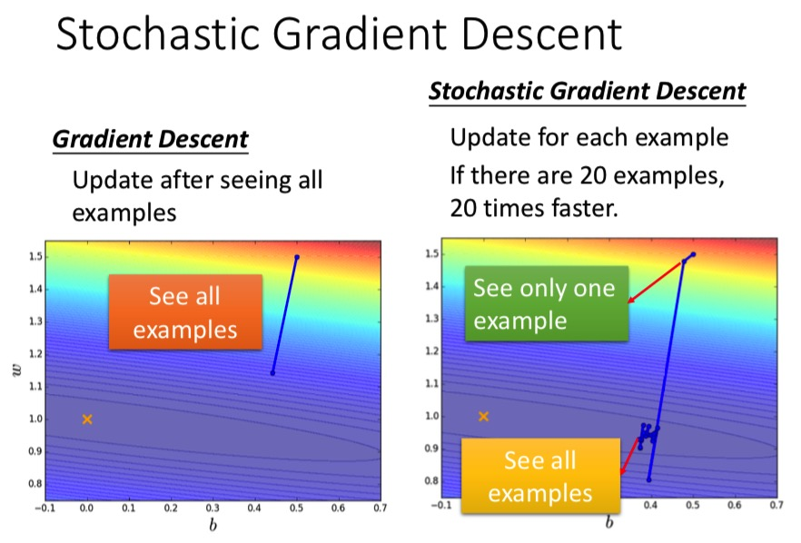
特征归一化(Feature Scaling)
把特征的各个维度进行归一化，使各个特征的取值范围一致。
具体做法：
- 取第
i维特征$x_i$； - 求均值$m_i$、标准差$\delta_i$；
- 对第
r样本，更新数值$ x_i^r = \frac {x_i^r - m_i} \delta_i $
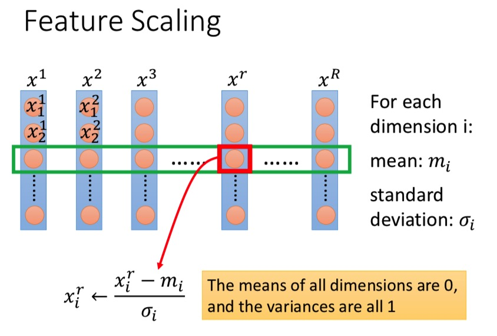
梯度下降的理论基础
Formal Derivation（形式误差）
给定一个起始点 $\theta^0$，我可以在其一定范围内找到一个最小的点，并更新为 $\theta^1$。如此迭代下去，知道找到最优解。
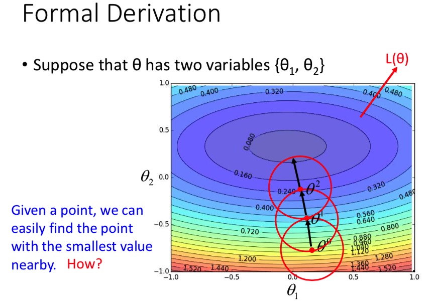
Taylor Series（泰勒级数）
定理：
如果 $h(x)$ 在 $x_0$ 附近是无限可微的，那么 $h(x)$ 可以展开成：
$$
h(x) = \sum_{k=0}^\infty \frac {h^k({x_0})} {k!} (x-{x_0})^k
= h(x_0) + h’(x_0)(x-x_0) + \frac {h’’(x_0)} {2!} (x-x_0)^2 + …
$$
当 $x$ 很接近 $x_0$ 时，$ h(x) \approx h(x_0) + h’(x_0)(x-x_0) $
多个参数的泰勒展开：
$$
h(x,y) = h(x_0,y_0) + \frac {\partial h(x_0,y_0)} {\partial x} (x - x_0) + \frac {\partial h(x_0,y_0)} {\partial y} (y - y_0) + …
$$
当 $(x,y)$ 很接近 $(x_0,y_0)$ 时，$ h(x,y) \approx h(x_0,y_0) + \frac {\partial h(x_0,y_0)} {\partial x} (x - x_0) + \frac {\partial h(x_0,y_0)} {\partial y} (y - y_0) $
梯度下降法的由来
如图，假设红色圆圈(半径d)很小很小，那么损失函数在红色圆圈内满足：
$L(\theta) \approx s + u(\theta_1 - a) + v(\theta_2 - b)$
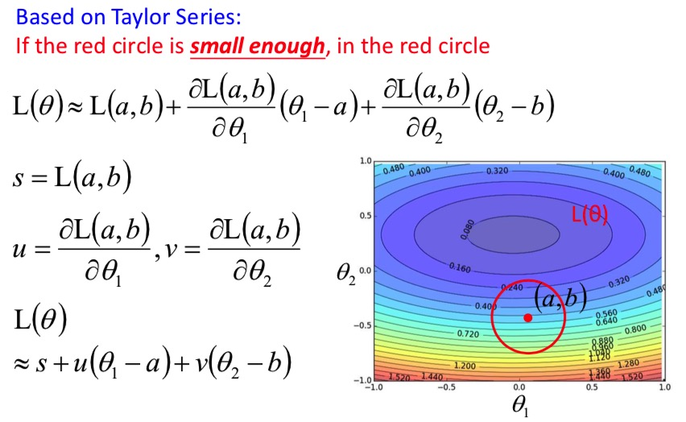
问题转换为：在红色圆圈内，求损失函数的最小值。
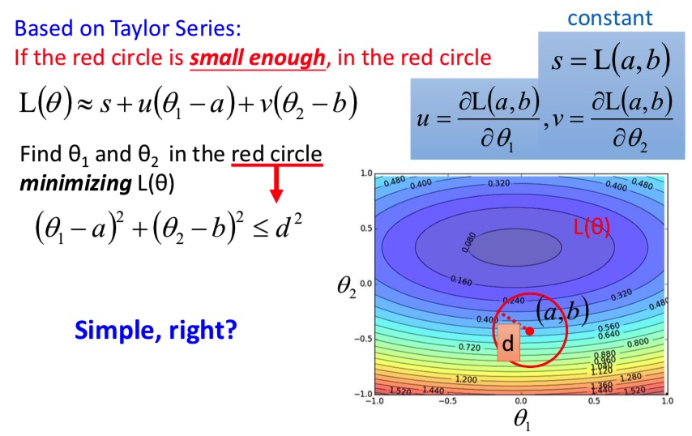
如下图，损失函数的各个部分中，$s, u, v$是固定的，我们要求的是 $\Delta \theta_1$ 和 $\Delta \theta_2$ .
从图中，很容易看出，当 $(\Delta \theta_1$ , $\Delta \theta_2)$ 与 $(u, v)$的方向正好相反时，$L(\theta)$最小。
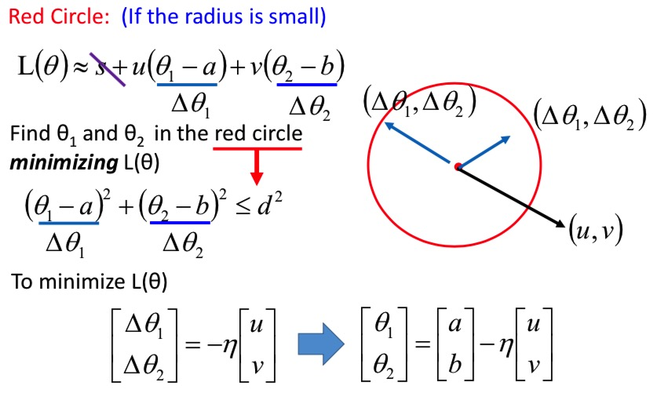
也就是说 $\theta^{t-1} - \theta^t$ 的结果是 $(u, v)$ 的反方向。
如下图，转换一下之后，就得到了梯度下降的公式。
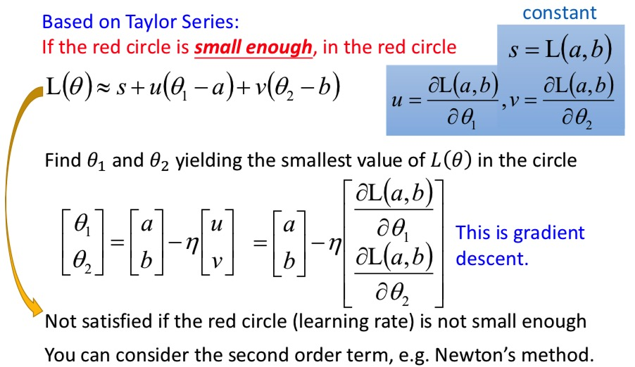
Note：如果把泰勒级数的二次微分考虑进来的话，就是牛顿法了。
梯度下降法的局限性
容易卡在局部最小值点和鞍点，他们的共同点都是微分值为0的点。
计算过程中，当微分值特别小的时候，我们可能会认为这是到了局部最小值，就提前结束循环。
实际上，我们可能只是遇到了鞍点。
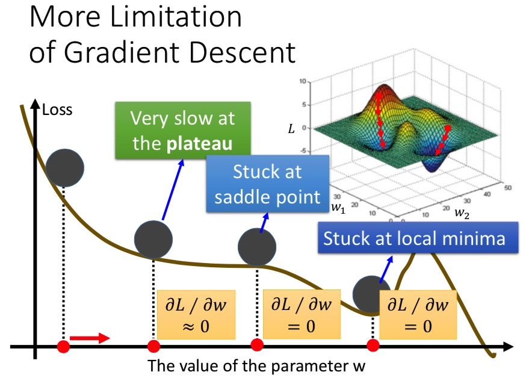
总结：
- 梯度下降法的三个tip：
- 使用Adagrad动态调整learning rate
- 随机梯度下降
- 特征归一化
- 通过泰勒级数推出梯度下降的方法。
- 梯度下降法的局限性：容易卡在局部最小值点和鞍点。